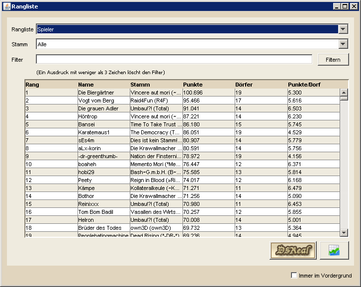

Ranglistenübersicht |
|
|  | |
Die Ranglistenübersicht zeigt eine kleine Auswahl von Ranglisten an, wobei einige davon bereits im Spiel vorkommen, andere wiederum ein wenig ausführlicher gehalten sind. Seit Version 1.5 hat DS Workbench den Zugriff auf Statistiken des Spielerprojekts DS Real integriert. Hierfür bietet das Menü auf der rechten Seite die folgenden Möglichkeiten:
|
|
Shortcut-Funktionen |
|
|